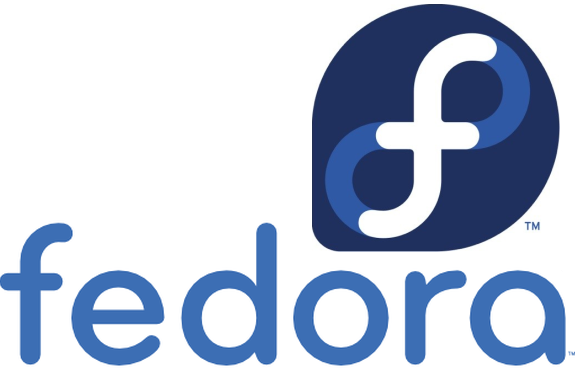

Por defecto Fedora no tiene habilitado SSH. Para hacerlo, primero tenemos que instalar OpenSSH.

dnf -y install openssh-server openssh-clients
Con systemctl enable, creamos y habilitamos el servicio, para que la siguiente vez que arranquemos Fedora, inicie nuestro servidor SSH.
systemctl enable sshd.service
Iniciamos el servicio
systemctl start sshd.service
Ahora ya podemos conectarnos por SSH a nuestro Fedora
Publicado por Angel el Wednesday 11 December del 2019
También te puede interesar:
Powered by org-bash-blog
Written in OrgMode with Emacs and converted to HTML with Pandoc

Este obra está bajo una licencia de Creative Commons Reconocimiento-NoComercial-CompartirIgual 4.0 Internacional.